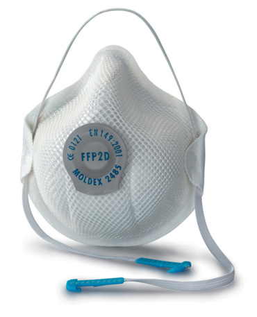

DELO Z APARATOM
Okoliščine dela z aparatom so različne, zato je v prvi fazi najpomembnejše delo po navodilih proizvajalca. Vsak uporabnik mora opraviti osnovni tečaj iz nošenja tega aparata, nato pa upoštevati vse druge dejavnike. Kar nekaj je standardov, ki so pri IDA, ampak vedno začnemo s klasičnim testom aparata pred uporabo.
1. Odpremo ventil tlačne posode in preverimo stanje na manometru, ki ne sme biti manjše kot 90 odstotkov nazivnega tlaka tlačne posode.
2. Tlačno posodo zapremo in počakamo 20 sekund. Kazalnik na manometru ne sme upadati.
3. Močno vdihnemo skozi pljučni avtomat, da preverimo, ali se odpira, in počasi praznimo srednjetlačno linijo.
4. Preverimo, ali se je oglasila piščal pri ca. 50 barih.
Poznamo kar nekaj različnih podatkov o delu v ekstremnih razmerah, predvsem pri delu gasilcev. Delo in okolice, v katerih aparati delujejo, so različni.
Aparati morajo biti odporni proti visokim temperaturam.
- Testira se jih na suho vročino, pri čemer guma in drugi deli ne smejo zagoreti ali se stopiti, čeprav toplota seva skozi vizir, zrak, ki vdira v masko ob vizirju navzgor, le tega ohlaja.
- Potek zraka ob vizirju ima nalogo, da ne rosi vizirja, kajti različni geli in spreji proti rosenju v takih razmerah ne delujejo, poleg tega so gorljivi.
- Ventili morajo delovati nemoteno pri visokih temperaturah.
Aparati morajo biti odporni proti nizkim temperaturam.
- Guma in drugi deli ne smejo zmrzovati, ampak morajo ohranjati prožnost. Ob prehodu s toplega območja na hladno se temperaturna razlika zelo hitro povečuje, to pa ne sme vplivati na materiale.
- Vsi ventili morajo delovati pri nizkih temperaturah (tudi pri –40 stopinj Celzija), prav tako ne sme otrdeti disk varovalnega ventila.
- Nizka temperatura nastaja tudi pri reducirnem ventilu, ko se zrak razteza in se močno ohlaja. Ventil je na zunaj videti zamrznjen, toda mora delovati.
Aparati v vodi
IDA ni namenjen uporabi pod vodo, je pa res, da so aparati testirani zaradi primerov, ko so določeni reševalci nehote pristali v vodi, in so varni tudi, ko reševalce obdaja voda. Standard predpisuje, da mora aparat zdržati do enega metra globine. Poudarek: IDA ni namenjen uporabi pod vodo.
Aparat je treba pravilno namestiti, drugače nam povzroča veliko težav, poleg tega škoduje predvsem hrbtenici, tehta namreč šest do 18 kilogramov. Poleg pravilnega nameščanja je nujno tudi pravilno gibanje, ki ga usvojimo na tečajih in vajah.
POVZETEK
Dihalni aparat je naprava, ki je namenjena pomoči pri delu in je resnično zadnja zaščitna oprema, ki nam preostane pri nevarnem reševanju. Aparat je nepogrešljiv pripomoček v gasilstvu, je pa tudi zelo nevaren, če ni pravilno in sprotno vzdrževan.
Zavedati se moramo, da aparat ponuja zaščito dihalom in notranjemu organizmu, nikakor pa ne daje zaščite proti mehanskim poškodbam, opeklinam in tako dalje, vendar je po drugi strani izredno kakovostno zaščitno sredstvo v kombinaciji z drugo zaščitno opremo.
NEVARNOSTI ZA GASILCE
Poleg napadalcev imajo veliko verjetnost za nastanek poškodbe tudi gasilci pred objektom. Govorimo predvsem o poškodbah zaradi prisotnosti plinov, ki nastajajo kot posledica gorenja. Gasilci, ki opravljajo naloge podpore, večinoma ne uporabljajo zaščite za dihala, saj jih dim ne ovira toliko, da bi posegli po IDA ali polobrazni filtermaski.

Znana dejstva o ozračju in vplivu na človeško telo...
Ozračje je sestavljeno iz treh glavnih skupin, kisika – O2, 21 %, dušika – N2, 78 % in drugih žlahtnih plinov, 1 %. To je razmerje, ob katerem človeško telo normalno in logično deluje. V situacijah, kjer se razmerje v zraku spremeni, pa lahko nastanejo resne težave.
Pri posredovanju ob požarih ogenj za gorenje porablja kisik in hkrati proizvaja vrsto strupenih plinov.
Najpogostejši plini, ki nastajajo, so CO2, CO – oksid (ogljikov monoksid), HCL – vodikovi kloridi, HCN – vodikovi cianidi, NO-XI – hlapi. Vsi omenjeni plini so izredno strupeni in vsak po svoje škodljivo deluje na človeško telo. Poleg dima in hlapov so po večini to snovi (plini), ki jih človeška tipala (vonj, okus, vid …) ne zaznajo, zato so še bolj nevarni.
Človeško telo se odzove različno, največkrat je v prvi fazi povečana frekvenca dihanja, čemu sledijo slabost in omotičnost, ki lahko prehaja v bruhanje, nezavest in na koncu celo v smrt. Za lažje razumevanje sta prikazani dve tabeli, ki ponazarjata vpliv najpogostejših plinov na človeško telo.
| KONCENTRACIJA | VPLIV na človeško telo |
| CO2 – ogljikov dioksid | |
| 0,03 % | Normalna koncentracija v ozračju |
| 2 % | Globoko pospešeno dihanje |
| 3 % | Težko dihanje |
| 8 % | Glavobol, bruhanje, omotičnost |
| 10 % | Smrt v nekaj minutah |
| CO – ogljikov monoksid | |
| 0,32 | Izpostavljenost 5 do 10 min. –omotičnost, glavobol |
| 0,64 | Izpostavljenost 1 do 2 min. – omotičnost, glavobol, bruhanje |
| 1,28 | 2 do 3 vdihe: nezavest, smrt nastopi v 1 do 2 min. |
Pomembno dejstvo, ki se ga večina operativ cev ne zaveda, je prisotnost teh plinov v neposredni bližini objekta. To pomeni, da vsi gasilci, ki delujejo ob vhodih v objekt, v neposredni bližini objekta, kotanjah, jamah ali silosih, vdihavajo visoke koncentracije strupenih plinov. Plini imajo poleg primarnega delovanja, opisanega v tabeli, tudi sekundarni vpliv, ki pa se kaže v obliki kroničnih bolezni.
Pomemben element gasilstva je sanacija pogorišč, kjer gasilci razkopavajo žerjavico, odstranjuje stenske obloge, odpirajo strope, strehe ali preprosto prelivajo večje kupe sena, lesa, silose. To so dela, kjer se količina dima drastično zmanjša in je človek s svojimi čutili sposoben premagati potrebo po svežem zraku, zaradi česar je ob takšnih trenutkih lastna varnost zelo hitro zanemarjena. Gasilci večino tovrstnih del na žalost opravljajo brez ustrezne zaščite dihal. Nevarnosti pri plinih niso primarne, zato jih gasilci zanemarjajo. Dejansko stanje je mnogo bolj kruto, saj so strupi in pomanjkanje kisika prisotni in se nalagajo v manjših koncentracijah, kar pomeni počasno zastrupitev, ki je lahko, kot že omenjeno, tudi trajna ali kronična. V takšnih primerih, še posebno ob zavedanju, da so gasilci velikokrat utrujeni od predhodnega neposrednega gašenja, je razumljivo, da si želijo dela opravljati brez ustrezne zašite dihal (prava izbira bi bil izolirni dihalni aparat). Najmanjša ustrezna zaščita zunaj objekta bi bila uporaba respiratorne pol obrazne maske, ki zadrži vse večje in manjše strupene lebdeče dele v ozračju, ne zadrži pa plinov. V objektu bi morali uporabljati že ob najmanjši prisotnosti tlenja, gorenja IDA ali ustrezne pol obrazne maske z aktivnim filtrom.
Pred strupenimi lastnostmi ognja se napadalci zaščitijo z izolirnim dihalnim aparatom, medtem ko podporne enote teh ne uporabljajo. Razlog je, da je delo z IDA težje, dražje in predvsem logistično nemogoče izvedljivo. Z respiratornimi maskami zaščita dihal ni zgolj delno kvalitetna in v danem trenutku ni popolna rešitev, s katero bi bili zadovoljni gasilci. Treba je paziti, da se gasilci, ki so zunaj objekta, ne zadržujejo po nepotrebnem v bližini odprtin, kjer izhaja dim, se ne zadržujejo v bližini naprav z notranjim izgorevanjem ali pa vsaj uporabljajo cevi, ki dimne produkte odvedejo stran od naprav. V objektu ali na njem pa bi morali vsi gasilci uporabljati vsaj respiratorne maske.